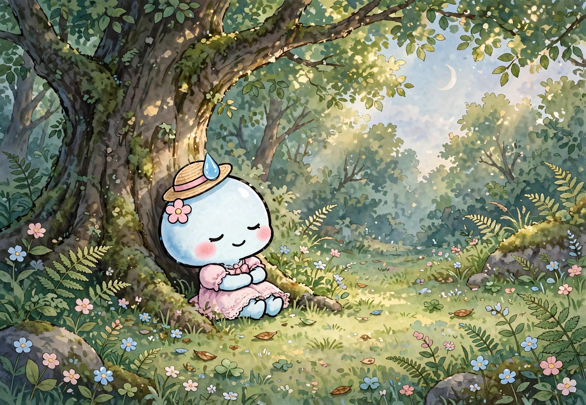
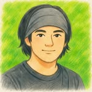

感じているのに、
言葉にできない。
水女子のための火育て塾🔥

他人ばかりを大事にしてしまう。
だから、この塾で育てるのは
「自分を大事にする」力です。
その手始めが、言語化。
感じたことを、言葉にすること。
たくさん感じているのに、言葉にならなくて、
モヤモヤが心と体に溜まっていく——。
ここは、あなたの気持ちを言葉にして、
外に出せるようになるための学びの塾です。
この塾で、できるようになること
モヤモヤを、言葉に変えていく場所
① モヤモヤを言語化して、分解する
「私の気持ち、一体なんなの。このイライラは。この不安は」——そのモヤモヤを言葉にしていくと、正体がはっきりしてきます。分からないまま抱えるのが、一番しんどいんです。
② 自分で自分の気持ちを、理解できる
言葉になった気持ちは、分解して、整理整頓できます。そうすると、自分のピース（パーツ）を、自分で取り扱えるようになります。心にも、体にも、頭にも、モヤモヤが溜まらなくなります。
③ 「これだよ」と、相手に伝えられる
自分の気持ちを自分で理解できると、旦那さんにも、周りの人にも、「これだよ」と言葉で伝えられるようになります。「察してほしい」と待つだけじゃなくなるんです。その積み重ねが、その人の中の火を育てます。
水男子や、学びたい火男子・火女子の方にも、開かれています。
大事なのは、正解の言葉を当てることじゃなくて、
「あなたの言葉」が見つかることです。
この塾の学び方
よくあるモヤモヤの場面を、たけちゃんが記事にして届けます。
読む中で、自分の言葉が見つかっていく塾です
① よくあるモヤモヤの場面を、記事で届ける
「言いたいのに、言えない」「断りたいのに、断れない」——水女子によくある場面を、一つずつ記事にしています。記事は、noteのマガジン『水女子のための火育て塾🔥』で読めます。
② 記事の中で、言葉の候補を当てていく
「これは？」「あれは？」「こういう言葉は？」——その場面の気持ちに、たけちゃんがいろいろな言葉を当てながら、読み解いていきます。考えるのは、あなた一人じゃありません。
③ 「あ、それそれ」が、見つかる
候補の中から、自分にぴったりの言葉にたどり着けたとき、モヤモヤがすっとほどけます。誰かの場面を読む中で、「あ、それ私も」と自分の言葉が見つかることが、よくあるんです。
妻の体験談
水が強い妻が、言葉にできるようになるまで
「私は、水が強くて、たくさん感じているのに、言葉にするのが全然できなかったんです。たけちゃんとたくさん会話することで、感じていたけど言葉にできなかったものが、どんどん言葉として出てくるようになりました。体にたまらなくなった感じがあって、今は感じているものをたくさん話すことが、すごく楽しくなっています。とても力強くサポートしてもらって、本当に良かったと思っています。言語化の喜びを感じられる女性が増えたらいいなと思っています。」
―― たけちゃんの妻（水の性質が強い）
いただいた感想
言葉にできるようになった、変化の声
「実家でトラブルになりたくなくて、イヤな気持ちを隠してニコニコしてた。
子どもの頃から『何考えてるのかわからない子で困った』と母に言われるたびに、『私が本音を出すと、あなたがヒステリックにわめくからでしょ』と思って腹を立てていましたが。
何考えてるのか、わからないなら、わかるように表現します！！
実家でキレ散らかします❣️
たけしさん、本当にありがとうございます🙇♀️」
「ありがとうございます。今日、納得いかないなって思う事が起こったのですが、気持ちを言葉にして伝える事が出来ました。今までの私は上手く言葉に出来なくて、我慢すれば良い、伝わって欲しいなど、モヤモヤしていました。今日、自分の変化が分かりました」
「いつも自分の気持ちを伝えるとなると、泣いてしまう事がほとんどでした。後から本当の思いが出てきて、また言えなかったと悔しくなったり。でも今日はしっかり落ち着いて、言葉が出て来て、話が出来たんです。自分でも私の思いがはっきり分かりました。嬉しいです！！本当にありがとうございます」
「買い物に行って、個人の飲食店でテイクアウトをしました。店員さんが気さくに話しかけて下さり会話になったのですが、今までの私は言葉を選びすぎるせいか、一生懸命話すような感じでした。今日はスラスラ言葉が出て来て、変化を感じました。本当に生活の一コマという感じですが、生きやすい様な感覚になります。心が穏やかに過ごせています」
「家族に対して、手伝って欲しいこと、嫌なことは伝えてみています」
「たけちゃん、こんにちは。だんだん、意識するだけで心に火が灯る感覚になってきました。伝えたいことは伝えて、家族も変わってきています」
記事は、noteで読めます
火育て塾の記事は、noteのマガジンにまとめています
水女子のための火育て塾🔥
よくあるモヤモヤの場面を、気持ちを言葉にするヒントと一緒に届けています。基本の記事は無料で読めます。より深く掘り下げた内容は、noteの有料記事として届けることもあります。
マガジンを読む記事を通して届ける形の塾です。
集まれ水女子の森
水女子の共感・憩いの場です

無料・登録不要集まれ水女子の森
新月・満月のカレンダーとメッセージ、惑星の順行・逆行、水女子あるある、みーちゃんの日記、うらないなど。環境の影響を受けやすい水女子が、静かに休んでいける場所です。
森に遊びに行くたけちゃんについて

心体調整塾 たけちゃん
僕は「火」が強い人間です。言葉で考えて、言葉で整理するのが得意な分、感じることは苦手でした。妻はその真逆で、たくさん感じているのに言葉にできない、「水」の強い人です。結婚15年の会話の中で、妻が自分の気持ちを言語化して、外に出して表現するのを、たくさん手伝ってきました。
火の力——言葉にする力で、水の気持ちを言葉に変えるお手伝いをする。それが、火男子の僕だからこそできることだと思っています。
食品工場 製造技術者
心と体の整体師研究
土木設備 ダム河川 技術者
夫婦15年研究
心体調整塾 たけちゃん